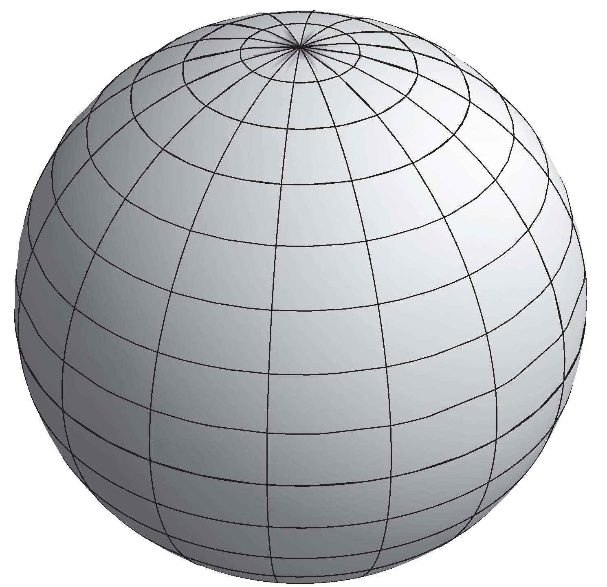
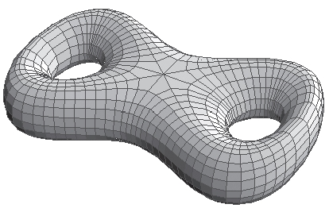
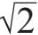
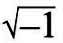
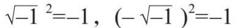
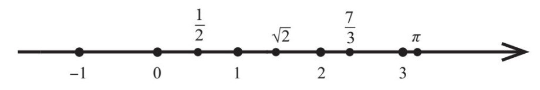
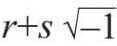
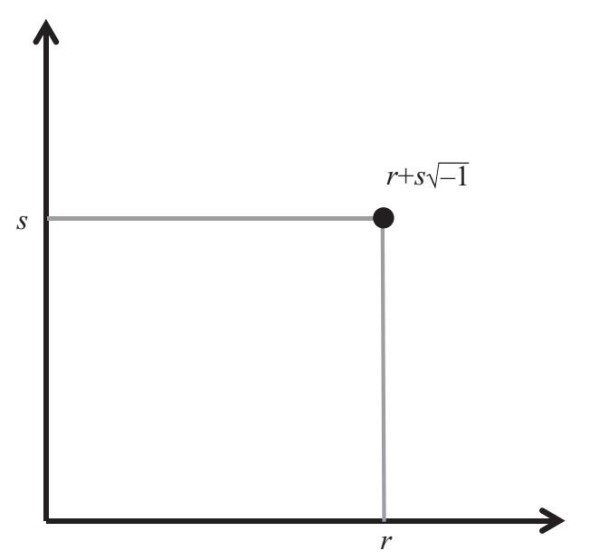
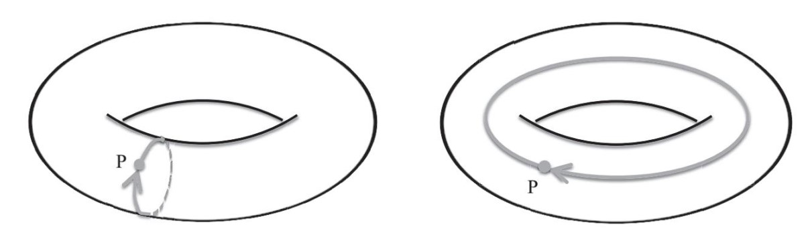

1940年，安德烈·韦伊因拒绝参战而在法国被捕入狱。《经济学家》（The Economist）杂志发表的文章指出：
在第一次世界大战期间，“在牺牲面前众生平等”的错误理念，导致法国科学界的大批年轻精英惨遭杀害。法国数学界因此而遭受的惨重损失令韦伊深感悲痛，他坚信自己有义务，不仅是为了他自己，也是为了整个人类文明，把自己的一生奉献给数学研究。他提出，如果不能坚守这个信念，就意味着犯罪。有人提出各种反对理由，诸如“如果每个人都像你这样……”韦伊的回答是，这种可能性几乎没有，因此他根本不会加以考虑。
在狱中，韦伊给妹妹西蒙娜·韦伊（Simone Weil）——一位著名的哲学家和人文主义者——写了一封信，这封信非常重要。他在信中用非常简单的语言（连哲学家都能看懂，开个玩笑）详细地解释了他对数学“大趋势”的理解。韦伊的这个做法堪称典范，值得所有从事数学研究的人借鉴。有时候，我开玩笑说，或许我们应该把顶尖的数学家抓起来，这样，他们就会像韦伊那样，用人们能看懂的语言解释自己的想法。
在信中，韦伊谈到了类比在数学中的作用，并以自己最感兴趣的类比——数论与几何学的类比，来阐明这个问题。
事实证明，数论与几何学的类比在朗兰兹纲领的发展过程中起到了非常重要的作用。我们在前面讨论过，朗兰兹纲领的核心在于数论。朗兰兹设想了一些难度较大的数论问题，例如计算当模为质数时方程式根的数量，可以利用调和分析法。更具体地说，即通过研究自守函数来解决。这个想法具有非常重要的意义：首先，它为我们解决棘手的难题开辟了一个新的途径；其次，这个想法直击不同数学领域间隐藏极深的基础性联系。因此，我们自然备感有趣，希望了解这些不同领域之间到底有什么内在联系，以及为什么存在这种联系。时至今日，我们仍然没有彻底解决这些问题，就连志村–谷山–韦伊猜想的证明也花费了我们很多时间，该猜想研究的只是一般性朗兰兹猜想的一个特例。而朗兰兹纲领中仍然有成百上千个类似命题有待证明。
因此，面对如此复杂的猜想，我们该怎么办呢？一个可行的办法就是刻苦钻研，努力寻找新的想法和新的深刻见解。当今数学界有很多人正在这样做，他们也取得了一个又一个显著的进展。另一个可行的方法则是拓展朗兰兹纲领的范畴。既然朗兰兹纲领揭示了数论与调和分析的一些基本架构，以及两者之间的联系，那么，很有可能在其他数学领域中也存在类似的基本架构和联系。
研究表明，情况确实如此。人们逐渐意识到，在其他数学领域，如几何学，甚至量子物理，也有可能存在类似的神秘规律。我们在研究某一个领域的规律时，对这些规律在其他领域的意义也会有所发现。我在上文中说过，朗兰兹纲领就是数学中的大统一理论，它揭示了一些普遍现象以及不同领域之间存在的联系。我坚信这是帮助我们理解数学真正内涵的金钥匙，其研究意义远大于朗兰兹猜想本身。
现在，朗兰兹纲领涉及的内容十分广博，一大批人都在为之努力。研究者分属数论、调和分析、几何学、表示理论、数学物理等不同领域，尽管研究的对象各异，但是他们观察到的现象却十分相似。这些现象可以给研究者们提供线索，帮助他们理解这些不同领域之间的关系，从而把这些部件拼成一幅巨大的拼图。
我研究朗兰兹纲领的切入点是“卡茨–穆迪代数”（Kac-Moody algebras，下面几章将做详细介绍）。随着我对朗兰兹纲领的了解不断深入，它在数学上无处不在的影响力让我越发感到心旷神怡、激动不已。
我们可以把现代数学的不同领域看作一门门语言。不同语言中的某些句子，在我们眼中，它们表达的意思是一样的。我们把这些句子放到一起，不断积累，就能得到一部字典，它可以帮助我们做翻译工作。数学的不同领域的情况与之相似。安德烈·韦伊的那封信就给我们建立了一个合适的框架，有助于我们理解数论与几何学之间的联系。韦伊把这个框架称为现代数学的“罗塞塔石碑”[1]。
一方面，我们把数论领域的一些内容作为研究对象，包括有理数和上一章讨论过的其他数域，例如在有理数中添加2后得到的数域，以及这些数域的伽罗瓦群。
另一方面，我们研究“黎曼曲面”。最简单的黎曼曲面是球面。

次简单的是环面，即甜甜圈的表面。这里需要强调一点，我们只考虑甜甜圈的表面，而不考虑其内部结构。
还有一种黎曼曲面是丹麦酥皮饼的表面，或者椒盐脆纽结饼的表面，如下图所示（见下页）。
甜甜圈有一个“孔洞”，而丹麦酥皮饼有两个“孔洞”。还有些黎曼曲面有n个孔洞，其中n=3，4，5，…。在数学领域，这些孔洞的数目被称作黎曼曲面的“亏格”（genus）[2]。黎曼曲面是以德国数学家波恩哈德·黎曼（Bernhard Riemann）的名字命名的。黎曼生活于19世纪，他的研究工作为数学领域开辟了若干重要的新发展方向。他的曲面理论，现在被称作黎曼几何，是爱因斯坦广义相对论的基础，爱因斯坦方程式用表示时空曲率的黎曼张量，来描述万有引力。

* * *
乍一看，数论与黎曼曲面毫不相关。但是，研究表明，两者之间存在众多相似性。两者之间还存在另外一类对象，这是理解两者相关性的关键所在。
为了更好地了解这类对象，我们必须清楚，黎曼曲面可以用代数方程式来描述。例如：
y2+y=x3–x2
我们再次以上面这样的三次方程式为例。前面说过，在讨论这类方程式的根时，必须规定其所在的数字系统。数字系统可以有多种选择，从而引出不同的数学理论。
在上一章，我们讨论了当模为质数时方程根的情况，这是一种数学理论。我们还可以考虑在复数条件下根的情况，这又是另外一种数学理论。在后一种情况下，我们会得到黎曼曲面。
人们经常觉得复数充满神秘感，而且无比复杂。事实上，复数与我们上一章讨论的2的平方根一样，并没有达到无法理解的复杂程度。
现在，我来告诉大家其中的秘密。在上一章，我们在有理数中添加了方程式x2=2的两个根,我们把这两个根记作

和–。现在，我们不讨论方程式x2=2，而是讨论方程式x2=–1。这个方程式看上去比上一个方程式复杂吗？不是的。该方程虽然在有理数范围内无解，但是我们无须担心。我们把该方程的两个根添加到有理数中，并把它们分别记作
和–。它们满足方程式x2=–1，即：
这跟第一个方程式只有细微的差别。数字不是有理数，但它是一个实数，因此，把它添加到有理数中，所生成的数域仍然属于实数范畴。
我们可以通过下述方式，从几何学的角度来理解实数。画一条直线，在该直线上标出两个点，分别代表数字0和1。然后在1的右侧再标出一个点，使其与1的距离等于0与1之间的距离，该点代表数字2。以同样的方式在直线上标出所有代表其他整数的点。接下来，我们把代表整数的各个点之间的距离进行进一步细分，以表示有理数。例如，数字1/2对应0与1的中点；数字7/3对应位于2和3之间的前处1/3的点，依此类推。现在，我们知道，实数与该直线上的所有点都形成了一一对应关系。

在前文中讨论数字时，我们用直角边长度为1的直角三角形的斜边长度来表示这个数字。因此，我们在直线上表示的方法就是在0的右侧找到一个点，使其与0的距离等于该直角三角形的斜边长度。数字π的值等于直径为1的圆的周长，因此，我们可以用同样的方法在直线上标出该数字。
但是，方程式x2=–1在有理数范围内无解，也没有实数根。这是因为任意实数的平方都是正数或0，而不可能等于–1。因此，与和–不同，和-都不是实数。不过，这又有什么关系呢？我们在前面采取了一些方法，引入了数字和–。现在，我们可以采用同样的方法，引入数字–1和––1。同时，在对这些新数字进行运算时，我们也可以采用相同的运算法则。
我们回顾一下前文的内容：我们注意到方程式x2=2在有理数范围内无解，于是为该方程式创建了两个根，分别记作和–，并将其添加到有理数中，从而得到一套新的数字系统（我们称之为数域）。同样，我们在观察方程式2x=–1时，也发现该方程式在有理数范围内无解，于是我们为该方程式创建了两个根，分别记作和–，并添加到有理数中。程序完全相同！但是，我们在考虑这套新的数字系统时，为什么会觉得它比包含的那套数字系统更复杂呢？
之所以产生这样的感觉，是因为我们可以把表示成一个直角三角形的斜边长度，而却不能通过同样直观的几何方式来表示。这种感觉纯属心理作用，因为通过代数的方法，我们可以有效地处理，这跟处理没有什么区别。
我们把添加到有理数中，得到一套新的数字系统。该数字系统的元素叫作复数，其书面表达式是：

其中，r和s是有理数。接下来，我们把上述表达式，与前文中提到的添加后得到的数字系统中的元素的通用表达式进行比较。对于任意两个这样的数字，我们在进行加法运算时，只需要将其中的r部分和s部分分别相加；而在进行乘法运算时，我们可以去掉括号，用· =–1这个规则进行运算即可。同样，我们还可以对其进行减法和除法运算。
最后，我们将对复数的定义进行延伸和拓展，允许上述表达式中的r和s是任意实数（而不仅仅是有理数），这样的复数最具一般性。注意，习惯性的做法是把记作i[表示“虚构的数字”（imaginary）]，但是我不会这样做。我选择这样的表达，目的是强调该数字的代数含义：就是–1的一个平方根，与是的一个平方根一样。这毋庸置疑，也不像我们想的那样神秘。
我们可以通过几何的方式来表示这些数字，以便了解它们的具体含义。实数可以表示为直线上的点，与之相似，复数也可以表示为平面上的点。也就是说，对于复数r+s，我们可以把它表示成由r轴和s轴所确定的平面上的点。

现在，我们回过头来，继续研究三次方程式：
y2+y=x3–x2
并找出该方程式的复数根。
人们通过研究发现了一个值得关注的事实。该方程式的所有复数根的集合，正好是上文中描述的环面上各点的集合。换句话说，环面上有且只有一组能满足上述三次方程式的复数x、y，反之亦然。
如果你以前没接触过复数，估计现在你已经感到头疼了。这一点儿也不奇怪。理解一个复数就够麻烦的了，现在却要同时理解两个复数，而且这两个复数还是某个方程式的两个根。这些成对的复数与环面上各点的一一对应关系并非一目了然，因此，即使你没有看出来也无须气馁。事实上，对于很多从事数学研究的专业人员而言，要证明这个令人意想不到的“非凡”成果，也不是一件轻而易举的事。
为了让大家确信代数方程式的根与几何图形存在对应关系，我们先来研究一个在实数范围内有解的方程式。这样的方程式比有复数根的方程式简单一些。例如，我们可以考虑下列方程式：
x2+y2=1
我们把该方程式的根以点的形式标在由x轴和y轴确定的平面上，所有根的集合构成以原点为中心、半径为1的圆。由实数变量x和y构成的其他所有代数方程式，其根的集合同样可以在该平面上构成一条曲线。
每个复数从一定意义上讲都是两个实数（每个复数都是由一对实数确定的），因此，此类代数方程式的复数根x和y自然会形成一个黎曼曲面。
除实数根和复数根以外，我们还可以在由{0，1，2，…，p–2，p–1}这些元素构成的有限域中找出根x、y，其中p是质数。换言之，我们将x、y代入方程式，方程式左右两边都会变成整数，而且这两个整数都是p的整数倍。于是，我们会得到数学领域所谓的“有限域平面上的曲线”。当然，它不是真正的曲线。之所以使用该术语，是因为我们找到的实数根可以在平面上构成曲线。
韦伊敏锐地洞察到，这个领域中最基本的研究对象是代数方程式，如上文所讨论的三次方程式。根据所选取的定义域，同一个方程式可能会表示成几何形式的曲面、曲线或一组点，这些图形只不过是该方程式抽象含义的不同“化身”，就像印度教中的毗湿奴[3]有10个化身一样。巧合的是，韦伊在给他妹妹的那封信里援引了《薄伽梵歌》（人们认为，印度教的这篇经文首先提出了毗湿奴化身说）。韦伊认为，当两种理论间的粗浅类比转化为有形的知识时，就会产生深远的意义。他在信中用富含诗意的语言，描绘了这种转变的结果。
这两种理论从此消失于历史的尘埃里，随之而去的是它们留给彼此的痛苦又甜蜜的回忆，欲言又止的羞怯暧昧和莫名其妙的争吵。太棒了，我们只需要面对一种理论了，它气宇轩昂的美感再也不会让我们诚惶诚恐、激动不已。两种理论之间的这种暗通款曲会产生丰硕的成果，给真正的行家带来无与伦比的愉悦……愉悦感来自对意义的错觉和曲解，一旦幻象消失，取而代之的就是知识，我们再也不会莫名兴奋，而是冷眼旁观。《薄伽梵歌》中有一段诗文描述了类似的感受。不过，现在我们还是回过头继续讨论代数方程式吧。
现在，大家应该清楚黎曼曲面与有限域平面上的曲线之间的联系了。两者都来源于同一类方程式，只不过我们所选的定义域不同：有时是在有限域中求解，有时则用复数表示方程根。此外，韦伊在他的信中告诉我们，“数论中的任何求解过程或结果都可以直接理解成”有限域平面上的曲线，也就是说，有限域平面上的曲线是连接数论与黎曼曲面的纽带。
因此，我们找到了连接数论与黎曼曲面的桥梁，或者说“纽带”（韦伊给出的名称），即有限域代数曲线理论。换言之，我们有三组平行轨道。
数论 有限域平面上的曲线 黎曼曲面
韦伊想探索是否有可能从一个轨道中选取某个表述，然后将其转化成另外两个轨道中的表述。他在给他妹妹的信中说：
我的研究目的是破译用三种语言写就的文本。在这三个领域中，我只有一些支离破碎的知识。我对这三种语言分别有一些理解，但是我也清楚这三个轨道彼此之间在内涵上存在巨大的分歧，我到目前为止还没有充分掌握这些分歧。经过几年的研究，我只积累了一些知识的碎片，这还不足以编纂出一本完整的翻译字典。
接下来，韦伊致力于研究如何将他的“罗塞塔石碑”付诸实践。他的努力取得了令人叹为观止的成果，我们现在称之为“韦伊猜想”。20世纪下半叶，有关韦伊猜想的证明活动极大地推动了数学的发展。
* * *
我们还是回过头来从朗兰兹纲领说起。朗兰兹最初的想法涉及韦伊的“罗塞塔石碑”左端的轨道，即数论。他在数论的伽罗瓦群表示（这是数论的研究内容）与自守函数（这是调和分析的内容）之间建立了联系。调和分析是与数论相去甚远的数学领域（与“罗塞塔石碑”的另外两个轨道的关系也不紧密）。现在，我们可能会问：如果我们用韦伊的“罗塞塔石碑”中间与右端的两个轨道里的某些研究对象取代伽罗瓦群，是否还能发现这种关系呢？
因为所有必需的成分都已经齐备了，所以将朗兰兹纲领转换到中间轨道上并不是十分复杂。此时，数论的伽罗瓦群应当转换成与有限域平面上的曲线相关的伽罗瓦群。调和分析的一个分支研究的就是堪当此任的自守函数。朗兰兹在他最初的研究中，已经在伽罗瓦群的表示与和中间轨道相关的自守函数之间建立了联系。
不过，如何将这种关系发展到“罗塞塔石碑”的右端轨道，人们仍然不知道。为了实现这个目标，我们需要从黎曼曲面理论中为伽罗瓦群与自守函数找到几何学的类比关系。当朗兰兹首次提出他的这些想法时，他已经找到了伽罗瓦群的几何类比关系，但是自守函数的几何类比关系仍然是一个谜。直到20世纪80年代，在俄罗斯杰出数学家弗拉基米尔·德林费尔德的开创性研究的引领下，人们才找到了合适的答案，将朗兰兹纲领发展到“罗塞塔石碑”的第三个轨道上。
我们先从伽罗瓦群的几何类比谈起，伽罗瓦群的几何类比是黎曼曲面的“基本群”（fundamental group）。
基本群是数学分支拓扑学领域中的一个非常重要的概念，其关注的焦点是几何形状的显著特点（如黎曼曲面中“孔洞”的个数）。
我们以环面为例。我们在环面上取一点P，观察从该点开始并至该点结束的闭合路径。我们在下图中展示出两条这样的路径。

同样，任何给定黎曼曲面的基本群都是由该黎曼曲面上自固定点P开始并至该点结束的闭合路径组成的。
已知从固定点P开始且至该点结束的两条路径，我们可以先沿第一条路径，然后沿第二条路径，构建出一条新路径。因此，这条新路径也是从点P开始并至点P结束的。研究证明，闭合路径的这种“加法运算”满足第2章所介绍的群的所有结构特点，因此，我们认为这些路径可以构成群。
大家可能已经注意到一个问题：基本群中路径的加法法则，与我们在第5章中讨论的辫群中辫子的加法法则十分相似。出现这种相似性并非偶然，我们在第5章中解释过，由n条线构成的辫子可以被视为n个不同点所在空间中的路径。事实上，辫群Bn正是该空间的基本群。
研究表明，上图所示环面上的两条路径可以互换，即在相加时互换先后次序，而基本群的元素保持不变。因此，环面基本群的一般元素可以通过沿第一条路径运动M次、再沿第二条路径运动N次得到（M、N为整数，如果M为负数，则沿与第一条路径相反的方向运动M次，如果N为负数，则操作方式相同）。由于两条基本路径可以互换，因此先后次序并不重要，最后结果也是相同的。
对于其他黎曼曲面，其基本群的结构更复杂。不同路径不一定可以互换，这与辫群的情况相似。我们在第5章中讨论过，在由两条以上的线构成的辫子中，各条线不可以互换。
* * *
人们早已发现，伽罗瓦群与基本群之间具有不小的相似性。因此，我们的第一个问题就迎刃而解了：在韦伊的“罗塞塔石碑”的右端轨道中，伽罗瓦群的类比对象是什么？答案是黎曼曲面的基本群。
接下来，我们需要为自守函数找到合适的类比对象。古老的自守函数概念在数学研究中会带来诸多不便，因此我们需要向前迈一大步，用现代数学中内涵更深奥的“层”（sheaf）来取代自守函数。我们将在本书的第14章中讨论层的概念。
20世纪80年代，弗拉基米尔·德林费尔德提出用层来取代自守函数。他为朗兰兹纲领建立的新公式，可以被应用到韦伊的“罗塞塔石碑”的中间和右侧（分别涉及有限域平面上的曲线和黎曼曲面这两个轨道，该公式现在被称作“几何朗兰兹纲领”。而且，德林费尔德还为韦伊的“罗塞塔石碑”右侧轨道中的自守函数找到了合适的类比对象。
* * *
1990年春天，我在哈佛大学见到了德林费尔德。他不仅激起了我对朗兰兹纲领的兴趣，还让我认识到自己也可以为它的发展尽绵薄之力。德林费尔德发现几何朗兰兹纲领与我在莫斯科求学期间的研究领域存在着某种联系，因此，我的研究成果在德林费尔德的新方法中起到了极其重要的作用。我的数学生涯也因此发生了巨大的转变，从那以后，朗兰兹纲领成为我的主要研究课题。
接下来，让我们回到莫斯科，来了解一下在发表了关于辫群的第一篇论文之后，我又取得了哪些新进展。
[1] 1799年，在尼罗河西河口的罗塞塔附近发现的石碑，其碑文是用象形文字、古埃及通俗文字和希腊文字这三种文字刻成的。1822年，让–弗朗索瓦·商博良（Jean-Francois ois Champollion）对铭文中象形文字的释读使埃及文明的其他许多早期记录得到解释。因此，“罗塞塔石碑”一词常用来比喻或指代“理解疑难问题的关键”。
[2] 本书编辑（指英文版编辑）说，他家附近的一家德国酒吧出售的椒盐脆纽结饼有三个孔洞（而且美味可口）。
[3] 印度教徒认为他已有9个世俗化身，包括罗摩、黑天和历史上的佛；第10个化身将预示世界末日的到来。